리눅스마스터-2급 (2014-03-08 기출문제)
1과목: 리눅스 운영 및 관리
1. 다음 중 소유자가 master인 ihd.sh 파일을 uzoogom인 사용자가 실행할 수 있도록 파일의 허가권(permission) 변경할 때 사용하는 명령으로 알맞은 것은?
- chmod
- chown
- chgrp
- umask
(정답률: 77%)

2. 다음의 설명과 관련된 특수 권한으로 알맞은 것은?
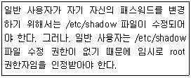
- Set-GID
- Set-UID
- Set-Bit
- Sticky-Bit
(정답률: 79%)
3. 운영 중인 시스템에 새로운 하드디스크를 추가하였다. 다음 중 관련 작업 순서로 알맞은 것은?
- mount – fdisk - mkfs
- fdisk – mkfs - mount
- fdisk – mount - mkfs
- mkfs – mount – fdisk
(정답률: 82%)
4. 일반계정인 uzoogom 사용자가 passwd 명령어를 사용한 암호 변경이 불가능한 상태이고, 관련 명령어 허가권 상태는 다음과 같다. 다음 중 관리자의 조치법으로 가장 알맞은 것은?
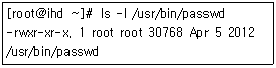
- chmod u+s /usr/bin/passwd
- chmod o+s /usr/bin/passwd
- chown uzoogom.uzoogom /usr/bin/passwd
- chown uzoogom.root /usr/bin/passwd
(정답률: 63%)
5. 다음 중 chmod 옵션에 대한 설명으로 틀린 것은?
- -R, --recursive : 하위 디렉터리를 포함하여 디렉터리 내부의 모든 파일의 접근 권한을 변경한다.
- -c, --changes : 변경된 정보를 출력해준다.
- -f, --force : 변경되지 않는 권한이 있을 경우에 강제로 변경한다.
- -v, --version : 명령어의 버전 정보를 출력한다.
(정답률: 61%)
6. umask -S의 결과값이 u=rwx,g=r,o=r이다. 다음 중 디렉터리를 생성할 경우에 기본적으로 설정되는 권한으로 알맞은 것은?
- d----wx-wx
- drwxr--r--
- drw-r--r--
- d---rw-rw-
(정답률: 70%)
7. 다음 조건으로 명령을 수행하려고 할 때 알맞은 것은?
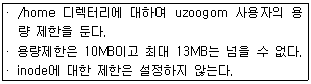
- setquota –u uzoogom 10000 13000 0 0 /home
- setquota –u uzoogom 0 0 10000 13000 /home
- setquota –u uzoogom 0 10000 0 13000 /home
- setquota –u uzoogom 10000 0 13000 0 /home
(정답률: 71%)
8. 다음 중 fstab의 6번째 필드에 1이 설정 되어 있는 경우에 연관있는 명령어로 알맞은 것은?
- mkfs
- dump
- usrquota
- fsck
(정답률: 71%)
9. /project에 대해 다음의 조건에 따라 접근 권한을 설정할 경우에 알맞은 것은?
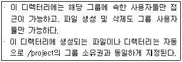
- chmod 3070 /project
- chmod 4070 /project
- chmod 0777 /project
- chmod 1777 /project
(정답률: 60%)
10. 다음 중 fstab의 첫 번째 필드에 들어가는 설정으로 틀린 것은?
- UUID=8421ba18-4702-4120-9756-02ca8e308577
- LABEL=/boot
- /dev/sda1
- /root
(정답률: 65%)
11. 다음 보기 중 성격이 나머지 셋과 틀린 것은?
- bash
- ksh
- perl
- csh
(정답률: 89%)
12. 다음 중 chsh –l 명령과 같이 변경이 가능한 셸을 확인 할 수 있는 파일로 알맞은 것은?
- /etc/shell
- /etc/shells
- /etc/login.defs
- /etc/shadow
(정답률: 74%)
13. 다음 중 명령행에서 !!의 실행의 결과로 알맞은 것은?
- 별 다른 메시지 없이 에러가 발생한다.
- 마지막에 사용한 명령을 재실행한다.
- 호스트 이름을 표시한다.
- 현재 명령의 히스토리 넘버를 보여준다.
(정답률: 84%)
14. 다음 중 주요 셸의 특징에 대한 설명으로 틀린 것은?
- bash : 본 셸을 기반으로 하여 GNU 프로젝트에 의해 개발되었다.
- csh : 버클리대학의 빌 조이가 개발한 것으로 C언어를 기반으로 만들어졌다.
- tcsh : Tested C Shell의 약자로, csh의 테스트가 완료된 버전의 셸이다.
- ksh : AT&T사의 데이비드 콘이 개발하였고, 명령어 완성기능 및 히스토리 기능을 제공한다.
(정답률: 70%)
15. 다음 ( 괄호 )에 해당하는 결과물로 알맞은 것은?
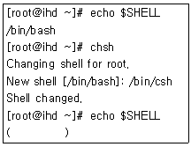
- /bin/bash
- /bin/ksh
- /bin/sh
- SHELL
(정답률: 73%)
16. 다음 중 가장 최근에 실행한 cat 명령어를 재실행 하기 위한 명령으로 알맞은 것은?
- !cat
- !!cat
- !^cat
- $cat
(정답률: 64%)
17. alias라는 명령을 실행하여 다음과 같은 값을 얻었다. 다음 중 ll 명령에 해당하는 alias를 삭제하고 싶을 때 알맞은 것은?
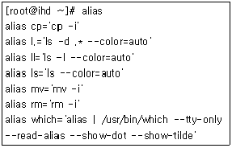
- alias ll
- unalias ll
- set ll
- unset ll
(정답률: 85%)
18. /IHD/WHITE 경로를 기존의 PATH 환경변수에 추가하여 사용하고자 할 때 bash쉘에서 사용하는 설정으로 알맞은 것은?
- PATH=/IHD/WHITE
- PATH=PATH:/IHD/WHITE
- PATH=$:/IHD/WHITE
- PATH=$PATH:/IHD/WHITE
(정답률: 84%)
19. 다음 ( 괄호 ) 안에 들어갈 설명으로 알맞은 것은?
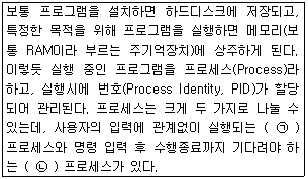
- (ㄱ) 백그라운드 (ㄴ) 포그라운드
- (ㄱ) 포그라운드 (ㄴ) 백그라운드
- (ㄱ) exec (ㄴ) fork
- (ㄱ) fork (ㄴ) exec
(정답률: 76%)
20. 다음 중 백그라운드로 프로그램을 실행할 때 사용하는 특수기호로 알맞은 것은?
- /
- !
- ?
- &
(정답률: 86%)
21. 다음 ( 괄호 ) 안에 들어갈 설명으로 알맞은 것은?
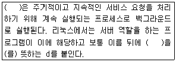
- 포그라운드 프로세스
- 백그라운드 프로세스
- 클라이언트
- 데몬(daemon)
(정답률: 87%)
22. 다음 중 포그라운드 프로세스를 중지(suspend) 시키고 백그라운드 프로세스로 전환할 때 사용하는 인터럽트 키 조합으로 알맞은 것은?
- [Ctrl] + [d]
- [Ctrl] + [z]
- [Ctrl] + [\]
- [Ctrl] + [u]
(정답률: 82%)
23. 다음 중 명령어에 대한 설명으로 알맞은 것은?
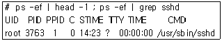
- 시스템에 실행 중인 모든 프로세스 중 sshd 데몬이 떠 있는지 확인한다.
- 현재 터미널에서 실행중인 프로세스 중 sshd 데몬이 떠 있는지 확인한다.
- 일반 사용자로 실행한 프로세스 중에서 sshd 데몬이 떠 있는지 확인한다.
- 모든 가상 터미널(pseudo terminal)에 실행한 프로세스 중에서 sshd 데몬이 떠 있는지 확인한다.
(정답률: 56%)
24. 다음 중 사용자가 로그아웃하거나 작업 중인 터미널이 종료 되어도 실행 중인 프로세스를 백그라운드 프로세스로 계속 할 수 있도록 해주는 명령으로 알맞은 것은?
- fg
- hup
- nohup
- pmap
(정답률: 78%)
25. 다음 중 kill 명령어의 설명으로 틀린 것은?
- 프로세스에 특정한 시그널을 보내는 명령으로 옵션 없이 실행하면 프로세스에 종료 신호(15, SIGTERM)을 보낸다.
- kill 명령어 다음에 반드시 PID 번호만 써야 하므로 작업 번호(Job Number)를 사용할 수는 없다.
- 기본적인 시그널의 종류를 확인할 때 kill 명령어에 -l(소문자 L) 옵션을 사용한다.
- 좀비 프로세스를 강제로 종료할 때 사용할 수 있다.
(정답률: 72%)
26. 다음 중 명령어에 대한 설명으로 알맞은 것은?
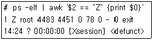
- 시스템에 실행 중인 모든 프로세스 중 좀비(Zombie) 프로세스를 검색한다.
- 시스템에 실행 중인 모든 프로세스 중 sleep 상태인 프로세스를 검색한다.
- 시스템에 실행 중인 모든 프로세스 중 포그라운드 프로세스를 검색한다.
- 시스템에 실행 중인 모든 프로세스 중 백그라운드 프로세스를 검색한다.
(정답률: 82%)
27. 다음 ( 괄호 ) 안에 들어갈 설명으로 알맞은 것은?
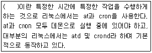
- 백업(backup)
- 프로세스(process)
- 스케줄링(scheduling)
- 가상화(virtualization)
(정답률: 82%)
28. 다음 중 crontab 명령어를 사용하여 등록된 스케줄링 작업을 확인할 때 사용하는 옵션으로 알맞은 것은?
- -e
- -l
- -t
- -r
(정답률: 72%)
29. 다음 중 리눅스에서 사용되는 편집기의 종류로 틀린 것은?
- pico
- vim
- bind
- emacs
(정답률: 80%)
30. 다음 중 설명에 맞는 편집기로 알맞은 것은?
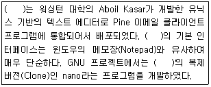
- vi
- vim
- pico
- gedit
(정답률: 78%)
31. 다음 중 vi 편집기의 이동 명령에 대한 설명으로 틀린 것은?
- w : 현재 커서 위치한 곳의 다음 단어로 이동한다.
- b : 현재 문서의 첫 번째 라인으로 이동한다.
- $ : 현재 커서 위치한 라인의 마지막 부분으로 이동한다.
- G : 현재 문서의 마지막 라인으로 이동한다.
(정답률: 51%)
32. 다음 vi 편집기의 명령 중 100번째 라인부터 200번째 라인까지 주석(#) 처리 할 수 있는 명령으로 알맞은 것은? (단, 셸에서 주석은 # 이다)
- :%s/^/#/
- :#/100/200/g
- :100,200s/^/#/
- :%s/100/200/#
(정답률: 62%)
33. 다음 중 emacs 편집기에서 프로그램 종료할 때 입력하는 조합으로 알맞은 것은?
- [Ctrl]+[f] 후에 [Ctrl]+[c]
- [Ctrl]+[f] 후에 [Ctrl]+[s]
- [Ctrl]+[x] 후에 [Ctrl]+[f]
- [Ctrl]+[x] 후에 [Ctrl]+[c]
(정답률: 70%)
34. 다음 중 vi 편집기에서 커서가 위치한 줄을 복사하는 명령으로 알맞은 것은?
- dd
- p
- yy
- cp
(정답률: 78%)
35. 다음은 리눅스에서 소스 프로그램을 설치하기 위해서 사용하는 일반적인 순서이다. ( 괄호 )안에 들어갈 내용으로 알맞는 것은?
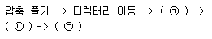
- (ㄱ)configure -> (ㄴ)make -> (ㄷ)make install
- (ㄱ)make -> (ㄴ)configure -> (ㄷ)make install
- (ㄱ)make install -> (ㄴ)make -> (ㄷ)configure
- (ㄱ)configure -> (ㄴ)make install -> (ㄷ)make
(정답률: 74%)
36. sendmail-8.12.8-6.i386.rpm 다음 중 RPM 패키지의 이름 형식에 대한 설명으로 알맞는 것은?
- sendmail : 패키지 버전
- 8.12.8 : 패키지 릴리즈
- 6 : 패키지 이름
- i386 : 패키지 아키텍처
(정답률: 77%)
37. 다음 중 gzip 명령어의 옵션에 대한 설명으로 알맞은 것은?
- -l : 하위디렉터리에 있는 파일을 압축한다.
- -d : 압축을 푼다.
- -v : 압축을 한다.
- -r : 버전 정보를 알려 준다.
(정답률: 63%)
38. 다음 중 상관있는 압축 관련 명령의 조합으로 틀린 것은?
- gzip - gunzip
- bzip2 - bunzip2
- compress - uncompress
- xz – gunxz
(정답률: 73%)
39. 다음 중 yum 명령어를 사용하여 "Java Development" 그룹 패키지를 설치하는 방법으로 알맞은 것은?
- yum install "Java Development"
- yum install group "Java Development"
- yum groupinstall "Java Development"
- yum -t install "Java Development“
(정답률: 69%)
40. 다음 중 yum 명령어를 사용하여 설치된 모든 패키지를 업데이트 하는 방법으로 알맞은 것은?
- yum -y install
- yum -y install all
- yum -y update
- yum -y update all
(정답률: 58%)
41. apt-get 명령어 사용 설명 중 틀린 것은?
- apt-get update - 패키지 목록 정보를 갱신
- apt-get install [패키지] - 패키지를 설치
- apt-get remove [패키지] - 패키지 삭제
- apt-get clean [패키지] - 패키지 삭제
(정답률: 75%)
42. 다음 중 설치된 파일로 rpm 패키지 이름을 알아 내려고 할 때 사용하는 명령어 형식으로 알맞은 것은?
- rpm -qf /bin/ls
- rpm -qc /bin/ls
- rpm -qa /bin/ls
- rpm –qp /bin/ls
(정답률: 44%)
43. 다음 중 BSD 계열의 프린터 명령으로 틀린 것은?
- lpr
- lp
- lpq
- lprm
(정답률: 63%)
44. CUPS를 사용하는 경우 로컬에 직접 연결한 프린터를 네트워크 프린터처럼 설정이 가능하다. 다음 중 접속하기 위한 ( 괄호 ) 안에 프로토콜로 알맞은 것은?
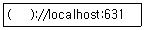
- ipp
- ftp
- http
- telnet
(정답률: 54%)
45. 다음 중 윈도우 시스템에 연결되어 있는 프린터를 사용하기 위해 가장 알맞은 것은?
- telnet
- ssh
- samba
- nfs
(정답률: 75%)
46. 다음 중 프린터 큐(Queue)에 있는 작업의 목록을 출력하는 명령어로 알맞은 것은?
- lp queue
- lpq
- lprm
- lpc
(정답률: 75%)
47. 다음 중 lpr 명령어로 동일한 문서를 7장 출력하기 위해 사용할 옵션으로 알맞은 것은?
- -n
- -m
- -7
- -#
(정답률: 61%)
48. 다음 중 이미지를 기본 설정된 값으로 스캔하여 image.pnm 파일로 저장하는 명령어로 알맞은 것은?
- scanimage > image.pnm
- scan > image.pnm
- scanimage | image.pnm
- scan | image.pnm
(정답률: 68%)
2과목: 리눅스 활용
49. 다음 중 ( 괄호 )안에 들어갈 내용으로 알맞은 것은?
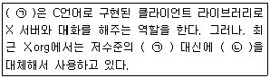
- (ㄱ) XFree86 - (ㄴ) Xorg
- (ㄱ) Xlib - (ㄴ) XCB
- (ㄱ) KDE - (ㄴ) GNOME
- (ㄱ) QT - (ㄴ) GTK+
(정답률: 68%)
50. 다음 설명하는 내용으로 알맞은 것은?
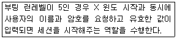
- 디스플레이 매니저
- X 라이브러리
- 데스크톱 환경
- 윈도 매니저
(정답률: 50%)
51. 다음 설명하는 내용으로 알맞은 것은?
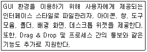
- 디스플레이 매니저
- X 라이브러리
- 데스크톱 환경
- 윈도 매니저
(정답률: 57%)
52. 다음중 KDE의 기반이 되는 라이브러리로 알맞은 것은?
- QT
- GTK+
- Motif
- Xaw
(정답률: 66%)
53. 다음 중 X 클라이언트를 원격지로 전송하기 위해 변경하는 환경변수로 알맞은 것은?
- DISPLAY
- VISUAL
- TERM
- XTERM
(정답률: 49%)
54. 다음 그림은 GNOME에서 제공하는 이미지 뷰어 프로그램이다. 프로그램 이름으로 알맞은 것은?
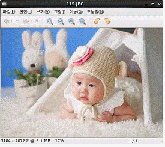
- totem
- ImageMagicK
- Gimp
- eog
(정답률: 51%)
55. 다음 중 GNOME 데스크톱 기반의 Movie Player로 알맞은 것은?
- totem
- ImageMagicK
- Gimp
- eog
(정답률: 64%)
56. 다음 중 스프레드 시트(Spread Sheet) 프로그램으로 알맞은 것은?
- LibreOffice Impress
- LibreOffice Draw
- LibreOffice Calc
- LibreOffice Writer
(정답률: 64%)
57. 다음에서 설명하는 LAN 구성방식으로 알맞은 것은?
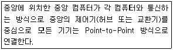
- 스타(Star)형
- 버스(Bus)형
- 링(Ring)형
- 망(Mesh)형
(정답률: 75%)
58. 다음 설명으로 알맞은 것은?
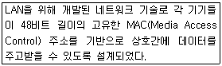
- Token Ring
- FDDI
- X.25
- Ethernet
(정답률: 63%)
59. 다음 설명으로 알맞은 것은?
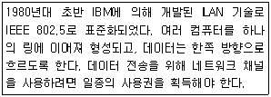
- Token Ring
- FDDI
- X.25
- Ethernet
(정답률: 72%)
60. 다음 중 MAN(Metropolitan Area Network)을 위해 제정된 국제 표준안으로 알맞은 것은?
- X.25
- ATM
- Cell Relay
- DQDB
(정답률: 53%)
61. 다음 중 회선교환방식 및 패킷교환방식에 대한 설명으로 틀린 것은?
- 패킷교환방식은 이론상 호스트의 무제한 수용이 가능하다.
- 회선교환방식은 고정된 패역폭을 할당받아 전송된다.
- 회선교환방식의 대표적인 예가 전화이다.
- 패킷교환방식은 회선교환방식에 비해 지연이 덜하다.
(정답률: 60%)
62. 다음 중 LAN용 트위스트 페어 케이블 규격인 T586B를 제정한 기관으로 알맞은 것은?
- ISO
- IEEE
- ANSI
- EIA
(정답률: 39%)
63. 다음 중 B클래스에 속하는 IP주소로 알맞은 것은?
- 127.10.17.253
- 128.211.12.22
- 192.168.3.221
- 223.45.62.124
(정답률: 65%)
64. 다음 중 SSH 서버 접속할 때 패스워드 입력없이 로그인하기 위해 생성하는 파일로 알맞은 것은?
- .forward
- .rhosts
- authorized_keys
- ssh_config
(정답률: 65%)
65. 다음 중 telnet 명령을 이용해서 192.168.12.22번 IP주소를 사용하는 웹 서버 포트를 점검하는 방법 으로 알맞은 것은?
- telnet –p 80 192.168.12.22
- telnet –P 80 192.168.12.22
- telnet 192.168.12.22:80
- telnet 192.168.12.22 80
(정답률: 46%)
66. 다음에서 설명하는 웹브라우저로 알맞은 것은?
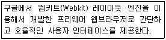
- Mozilla
- Chrome
- Opera
- Firefox
(정답률: 80%)
67. 유즈넷 뉴스그룹을 이용하기 위해서는 특정 뉴스리더 프로그램이 필요하다. 텍스트용 뉴스리더로서 대표적인 프로그램으로 틀린 것은?
- Pine
- Tin
- Pan
- Slrn
(정답률: 50%)
68. 다음 중 리눅스와 리눅스의 파일 공유, 리눅스와 유닉스의 파일 공유에 가장 효율적인 서비스로 알맞은 것은?
- telnet
- ssh
- samba
- nfs
(정답률: 57%)
69. 다음 ( 괄호 ) 안에 들어갈 내용으로 알맞은 것은?
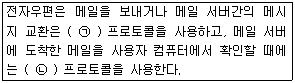
- (ㄱ) POP3 (ㄴ) IMAP
- (ㄱ) POP3 (ㄴ) SMTP
- (ㄱ) SMTP (ㄴ) POP3
- (ㄱ) IMAP (ㄴ) POP3
(정답률: 66%)
70. 다음 중 C 클래스 대역 주소의 기본 넷마스크 주소값으로 알맞은 것은?
- 255.0.0.0
- 255.255.0.0
- 255.255.255.0
- 255.255.255.255
(정답률: 82%)
71. 다음의 조건과 같을 때 설정된 서브넷마스크 주소값으로 알맞은 것은?
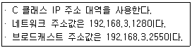
- 255.255.255.0
- 255.255.255.64
- 255.255.255.128
- 255.255.255.192
(정답률: 63%)
72. 다음중ifconfig 명령으로확인가능한정보로틀린것은?
- 브로드캐스트 주소값
- 하드웨어 주소값(MAC)
- 넷마스크 주소값
- 게이트웨이 주소값
(정답률: 62%)
73. 로컬 네트워크에서 IP주소가 192.168.12.22번을 사용하는 시스템의 하드웨어 주소를 알아보려고 한다. 다음 ( 괄호 )안에 들어갈 내용으로 알맞은 것은?
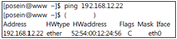
- arp
- ifconfig
- route
- ethtool
(정답률: 51%)
74. 다음 ( 괄호 ) 안에 들어갈 명령으로 알맞은 것은?
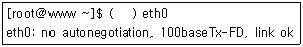
- arp
- ifconfig
- mii-tool
- ethtool
(정답률: 48%)
75. 다음 중 시스템에 설정되어 있는 게이트웨이 주소를 확인하는 명령으로 알맞은 것은?
- route
- ifconfig
- ethtool
- mii-tool
(정답률: 63%)
76. 다음 ( 괄호 ) 안에 들어갈 파일명으로 알맞은 것은?
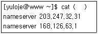
- /etc/hosts
- /etc/host.conf
- /etc/sysconfig/network
- /etc/resolv.conf
(정답률: 58%)
77. 다음 그림에서 설명하는 클러스터링 기술로 알맞은 것은?
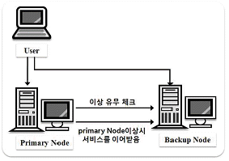
- 고계산용 클러스터
- 부하분산 클러스터
- 고가용성 클러스터
- 임베디드 클러스터
(정답률: 57%)
78. 다음 중 임베디드 리눅스의 장점에 대한 설명으로 틀린 것은?
- 소스가 공개되어 있어서, 변경 및 재배포가 용이하다.
- 커널과 루트 파일 시스템 등에 상대적으로 적은 메모리를 차지한다.
- 별도의 로열티나 라이선스 비용이 없다.
- 리눅스를 사용한지 오래되었고, 커널이 안정적이다.
(정답률: 59%)
79. 다음 중 반가상화뿐만 아니라 전가상화도 지원하는 가상화 기술로 알맞은 것은?
- KVM
- VirtualBox
- XEN
- VMware
(정답률: 51%)
80. 다음 중 리눅스 기반 모바일 운영체제로 틀린 것은?
- 안드로이드
- Tizen
- iOS
- Bada OS
(정답률: 57%)
chmod 명령은 파일이나 디렉토리의 허가권(permission)을 변경할 때 사용하는 명령이다. 이를 통해 파일의 소유자, 그룹, 기타 사용자에 대한 읽기, 쓰기, 실행 권한을 설정할 수 있다. 따라서 이 문제에서는 ihd.sh 파일의 실행 권한을 uzoogom 사용자에게 부여하기 위해 chmod 명령을 사용해야 한다.